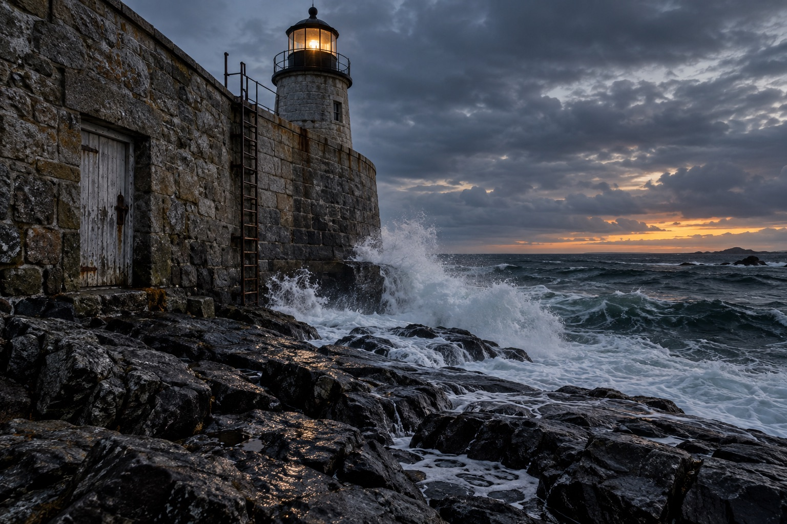

A four-room text adventure
The Last Light
A small lighthouse. An endless sea. Somewhere, a light still burns.
The lighthouse · N ↑
Spiral Stair
Lamp Room
Keeper's Kitchen
Rocks
● You are here
You are here
Rocks
Ocean blue · wild and windswept

Black rocks glisten beneath your feet as white waves break against the lighthouse. A narrow iron ladder climbs north to the Lamp Room, and a weathered kitchen door stands to the west.
You can go: North ↑ · West ←